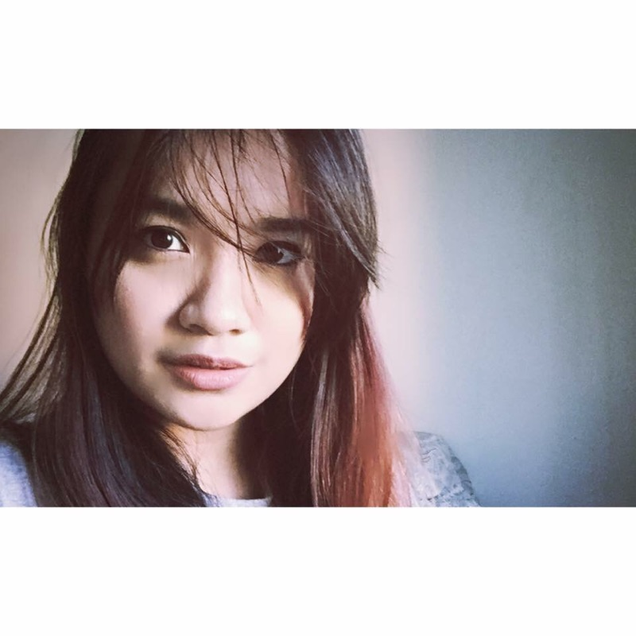
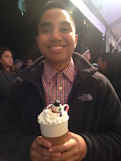

Running the Race
By: Aldriene Ladlad
Racial Tension
The concept “racial tension” can defined as the feeling that exists when people often do not trust and are usually aggressive towards each other. One clear example that displayed that the Filipino-American ethnicity continually remains a target of racial
tension was when Anti-Filipino graffiti messages were stated to be found on various Filipino-American establishments in Union City, California,like the restaurant Toppings Too, Filipino Advocates for Justice office and the Filipino Community
of Alvarado and Vicinity building, which currently houses various offices including the Union City Chamber of Commerce. As stated by the Union City Police Department “it can be possibly hinted that the hate crime towards the Filipino-American
ethnicity first began after the renaming of Alvarado Middle School after Filipino-American labor leaders Larry Itliong and Philip Veracruz”.
Prejudice and Discrimination
The concept “racial tension” can also be described as easily caused by acts of prejudice and discrimination towards a certain ethnicity. A second clear example that displays how the Filipino-American
ethnicity continually remains a target of racial tension/hate crime was when Robert Martirez, a “Pinoy” of Filipino descent was viciously assaulted and killed by an unknown assailant in the city of Queens, New York for unknown reasons/purposes.
Extra Information:
Pinoy killed in US hate crime
Anti-Filipino graffiti slams Fil-Ams; police probing it as hate crime
By: Benjamin Lew
Sugarcane
Institutionalized racism are patterns of social institutions that give negative treatments to a group of people based on their race. Actions such as lower wages to banning of movement by the government were enacted
upon the Filipino people throughout American history.
For example, in the early 1900’s while the Japanese workers started to move up in social classes in Hawai’i, the “Filipino laborers became a member of a ‘ feudal class bound
to the soil and more or less subject to the will of his lord’...their contracts bound them to specific plantations; they could neither leave the island of their residence nore move elsewhere without permission of the plantation owner.” As
the Japanese and other ethnic groups that were working on the sugarcane plantations were moving on from serfdom contracts and able to move into more urban settings throughout the islands, the lack of literacy and education for the Filipino
males created a vacuum of social mobility and pay wages. “The average Filipino male aged 15 and over earned $9,511 in 1979 as compared to the Hawaii average of $11,505, among the major groups…”
Land
As Bonus wrote, “Although they [Filipino workers] arrived with U.S. passports(and, therefore, as U.S. nationals, because of the Philippines’ status as a colony), Filipinos were ineligible for citizenship and were
legally barred from voting, establishing a business, holding private and public office, and owning land and other property”. This portrays the view of the U.S. government on people that they rule over and/or colonized, but do not see as
its citizens. The U.S. only viewed the Filipinos as a ward of the state. As thus, the Philippines were under American jurisdiction and control.
As non-American citizens, the limitations for Social Mobility of the Filipino people
were extremely limited. As in Hawai’i, they were there only to work the land but not live on it. The conditions of their living environment throughout the U.S. could be considered abysmal. They had to deal with the lowest wages amongst the
other labor workers as well as live in the filthiest conditions, regardless of being in Hawai’i or U.S. mainland.
Extra Information:
Prejudice in Paradise
Hawaii Is Diverse, But Far From A Racial Paradise
Citation:
Hass, Michael, “Filipinos In Hawaii and Institutional Racism” Philippine Sociological Review, Vol. 32, No1/4 January-December 1984, pp. 41-53
Bonus, Rick. Locating Filipino Americans : Ethnicity and the Cultural Politics of Space. Philadelphia: Temple University Press, 2000.
By: Flordellyn Arroco Castillo
What is Model Minority Myth?
The Model Minority Myth “contends all Asian Americans [as] well-educated, successful, and law-abiding citizens in the U.S. in comparison to other racial/ethnic minority groups of color (ie: African Americans, Latino Americans, and Native Americans)
who are stereotyped to be the opposite of the model: uneducated, unintelligent, and prone to crime,” (Nadal & Sue, 1999, Uba, 1994). Because of this myth, teachers, researchers and psychologists assume that many Asian Americans are doing
well for themselves, contrary to the actual experiences of Asian Americans. For instance, many Asian American subgroups (such as Filipino Americans) encounter a number of experiences that oppose the Model Minority Myth - these issues range
from poverty, lower educational achievement, HIV/AIDS, teen pregnancy and gang involvement. But, these issues continue to go unnoticed because Asian Americans are the model minority in the eyes of the majority of the United States’ population.
To leave a legacy behind, one must live their genuine life. And this proves to be a challenging task when the stereotypes that are placed upon Asian Americans are all that one is faced with on an everyday basis.
Effects of Asian American Stereotypes on Asian Americans
“The model minority stereotype could also have psychological, emotional, and social costs for Asian American students, such as studying harder and longer, foregoing social life, enduring loneliness and alienation, and experiencing extreme
depression and stress,” (Zhang, 2010). There are a lot of expectations from these students - from their parents, and from the larger society. For instance, Asian Americans are stereotyped into being really good at math or someone who gets
straight A’s. While this may be viewed as a “good” stereotype for some, it is these kinds of high expectations that make it hard for Asian Americans to live their genuine lives. The American mainstream media, for instance, portrays Asian
Americans as “all work, no play nerds, non-confrontational and speak poor English with an accent, exotic, non-American, and foreign,” (Zhang, 2010). Many Asian Americans are tired of being stereotyped as someone who doesn’t know English
well. A majority of Asian Americans speak English as the language that they use on an everyday basis, so exotifying Asian Americans as people who can’t speak English is an incomprehensible phenomenon that needs to be diminished. On top of
that, often, instead of hiring Asian American actors to portray Asian American characters, they would portray them using Yellow Face instead - a baffling reality. Filipino Americans, for instance, do not necessarily have yellow skin tones,
so the stereotype that all Asians and Asian Americans are yellow are wrong. So, if one lives in a city with a diverse group of people and a great number of Asian Americans, it’s easy to dispel such stereotypes - but what if one lives in
a place where the Asian American population is scarce? Or the only Asian American in their town is a Filipino American who doesn’t fit the physical characteristics of Asian American stereotypes, what would happen then? All one would know
of Asian Americans is how they see them portrayed in the media. And these stereotypes that are being portrayed for the larger society to see is not good for the Asian Americans who are simply trying to live their lives - as Americans.
Extra Information:
7 Worst Asian American Stereotypes
Perceptions of Asian American Students [Stereotypes and Effects]
Geishas and Math Nerds
Myth-busting Model Minority Asian American Stereotypes
Citation:
Nadal, K. (2011). Filipino American psychology: A handbook of theory, research, and clinical practice. John Wiley & Sons, Chapter 1
Zhang, Q. (2010). Perceptions of Asian American students: stereotypes and effects. Communication Currents, from web.
By: Jezryll Sapado
Female
Often times men prefer Asian women or would say Asian women are their “type.” I couldn’t understand how we are someone’s type or why men often refer to us or categorize us under a certain type of theirs. Suddenly,
it became clear, Asian women especially us Filipina women are known to be nurturing. We are women who are believed to be obedient and won’t talk back to men. We are expected to be good at cleaning, cooking, household duties, and what a typical
women should do, waiting on the men hand and foot. From these stereotypes typically affiliated to us Filipina women, it’s as if men other than Filipino men want us because we are someone who would take care of them rather than being their
partner. Men also look at Asian women as sexual objects, domestic servants, and exotic images of Geishas, that they believe Asian women are to satisfy the needs of men sexually and nothing more.
Male
While women are being exoticized for their beauty, Asian American men are looked at the opposite way. Many people have these perceptions because the way Asian American men are portrayed, that they lack masculinity. Many people assume
all Asian American men aren’t tall enough, are too nerdy, and not enough of a typical athlete to satisfy the fantasy of what every female is looking for in a man. Most females either look for a white or black man. Due to the misconceptions
placed on them, women start to believe that it is better to date men who can satisfy their needs because an Asian man can’t because they are stereotyped to have a smaller package. To some women Asian men are considered an “option” because
they’re believed to be so smart that they are able to obtain a good high paying job.
Extra Information:
Asian-American Men: Hunks of Burning Love or Wimps With Small Wieners?
4 Lies We Need to Stop Telling About Asian-American Men
Citation:
Sue, Derald Wing, et al. “Racial Microaggression and the Asian American Experience.” Columbia University, 2007. 72-80.
Yawson, Ama. "Asian-American Men: Hunks of Burning Love or Wimps With Small Wieners?" The Huffington Post. TheHuffingtonPost.com, n.d. Web. 06 Dec. 2016.
By: Joshua Remo
Anti-Miscegenation Laws
These laws were anti marriage laws which prevented people of different races from marrying one another. (most prominently white and any colored race) In context for Filipino Americans, during the
third wave of FIlipino Immigrants during 1910-1940 were mostly men. Anti-Miscegenation laws were not repealed in California until 1948 with the case of Perez v. Sharp. These laws were not repealed on a nationwide scale until 1967 with Loving
v. Virginia.
1924 Asian Exclusion Act
Anti Asian sentiment was the biggest driving factor in the rise of the anti immigration laws. This was driven mostly by the belief that Asians were stealing jobs away from Whites. For FIlipinos
specifically this was also done in response to our tendency to date White women. This was not repealed until 1952 with the Walter-McCarran Immigration and Naturalization Act. Immigrant Racial quotas themselves were not repealed until the
Immigration and Nationality Act of 1965.
Extra Information:
Perez v. Sharp
Loving v. Virginia
1924 Asian Exclusion Act
Walter-McCarran Immigration and Naturalization Act
Immigration and Nationality Act of 1965
Citation:
Nadal, K. (2011). Filipino American Psychology: A Handbook of Theory, Research, and Clinical Practice. John Wiley & Sons, Chapter 1.
Nadal, K. (2011). Filipino American Psychology: A Handbook of Theory, Research, and Clinical Practice. John Wiley & Sons, Chapter 1.
By: Kyla Williams
Part 1
Racism has been riddled throughout American history. As a new immigrant group emerges, seeking better opportunities, they are forced to face oppression and segregation creating a barrier to break through. As the
Filipinos start to immigrate as the main labor force, replacing the Chinese due to the Chinese Exclusion Act, they are forced to adapt to a country suppressing their success. Other social issues, such as the model minority myth and other
stereotypes have made it difficult for Filipino Americans to create their own legacies in the larger society. Often portrayed as exotic, foreign and not fluent in English, Asian Americans are placed in a bubble that is created by outsiders.
And it is up to us to show that this is simply not the case.
Part 2
When the U.S. Naval base was closed in the Philippines in 1992, A naval base that had been there for over half a century, over 50,000 children were left behind without fathers and sometimes, even their mothers,
who either were ashamed to have a child out of wedlock or were to poor to care for their child. These children are called “Amerasians” (Children who are born in Asia but to U.S. Servicemen). Although there was an act enacted called the American
and/or Amerasian Immigration Act passed in 1982, for those born between December 31, 1950 to October 22, 1982, this was only extended to certain countries such as Cambodia, Korea, Thailand, Vietnam and Laos, but not to the Philippines. Many
of the children born to U.S. Servicemen who left in 1992 lived in poverty, had problems with alcohol and drugs, and faced discrimination in the Philippines, specifically those who were born to African American fathers, many of these children
faced discrimination for their darker skin complexions. There is this pain for many “Amerasians” in the Philippines struggling with their identity and how that connects to the abandonment of their fathers
Link:
The Philippines' Forgotten Generation
Philippine Amerasians: The Forgotten Children
Video:
IndependentLens
By: Lolo Finaw-Cruz
Post 1
One book that discusses Asian Americans in the media is Virtual Orientalism. The book discusses how Asian Americans are both represented and not represented in the media. For example Asian Americans aren’t represented in media and are replaced with those deemed as more “masculine” and can fit the roles of the hero. When we are represented, it’s within the lines of what society expects of us. Fitting the roles of the martial arts sifu, the “Asian Baby Girl” or the exotified nerd. Asian Americans play a certain role in American Pop culture, that don’t allow them to move past a certain point within media. It also delves deeper into the idea of sifu’s and monks. Understanding the spirituality that demystifies their appearances, rather than looking at them from a certain perspective. By breaking the different stereotypes that surround these Asian Roles in media, one can understand where they really come from, as well, as understand the social structures that force Asian Americans into a box. It’s the same social construct that doesn’t allow Asian Americans see, or develop past a certain point in fear of breaking the glass ceiling that keeps white and mainstream Americans on top. It also allows us to look at the real religion that, is both shown and ignored within the media.
Post 2
The article is called Restrictive Portrayals of Asians in the Media and How to Balance Them. This article covers how Asian Americans are portrayed within social media. Many Asian Americans are restricted in what roles they can play. “Asian Americans in diverse, mainstream occupations: doctors, lawyers, therapists, educators, U.S. soldiers, etc.” (MANAA, 2) Asians play to what is acceptable for Western/ American culture. Another problem is that it puts Asian American actors in limbo. Having to fight between their loyalty of the old country, and their place within the United States. This article also introduces the concept of “Stereotype Buster”. That Asian Americans are good contributors to American society, and there is much more to us then the stereotypes that are given to us. That Asian Americans are able to take on lead roles, that encompasses their own identity as it is and not as its assumed to be. Personally I think that its true, and that Asian Americans need to have that larger role within society. I want to see more Asian Americans that break these stereotypes, and show the next generation of youth that we are more than what people think we are.,
Extra Information:
Asian-American Men: Hunks of Burning Love or Wimps With Small Wieners?
Citation:
Sue, Derald Wing, et al. “Racial Microaggression and the Asian American Experience.” Columbia University, 2007. 72-80.
By: MaryJane Santos
Filipino Americans at San Francisco State University
At San Francisco State University, a class is offered titled “Filipino American Identities,” taught by Alyson Tintiangco-Cubales. I was gracious enough to participate
in this course and have come in to contact with individuals that I have more in common with than I could ever imagine. On the first day of class, Ate Alyson asked us to go around the room and talk about the most racist, stereotypical thing
we had ever heard directed towards us. The thought was terrifying considering we had known each other for all of about 10 minutes. But walls were broken, guards were let down, and emotions began to pour out. Words like nurse, care-taker,
spoil-of-war and dog-eater echoed in the room. While I had experienced racism in my short lifetime, I had never realized how common it was amongst other Filipino Americans. It goes without saying that racism can deter the growth and association
with one’s culture, but with safe environments that encourage and nourish the acceptance of race and identity, a positive outlook on one’s self is inevitable, despite the naysayers.
Developing Filipino American Identity
The concept of race is a hypothetical one, simply based on the color of one’s skin (Tintiangco-Cubales). However, this is a widely accepted form of categorization. Filipino Americans
have struggled greatly with the concept of race, especially those that fall victim to Colonial Mentality. Kevin Nadal defines colonial mentality as “the concept that the colonizer’s values and beliefs are accepted by the colonized as a belief
and truth of their own; that the mores of the colonizer are superior to that of the colonized” (Nadal) This is strongly evident in the common desire amongst Filipinos to have whiter skin because “white is superior.” Giving in to colonial
mentality leads to a difficulty in the development of Filipino American identity. Without a proper framework of history or connection to culture, Filipino Americans can struggle with who they are, where they came from, and what they associate
as their “race.” Growing up in America, many succumbed to American ideals and often times developed a more “suburban” mindset. This can lead to confusion and misinterpretation of one’s self.
Citation:
Nadal, Kevin L., Kara Mia Vigilia Escobar, Gail T. Prado, E. J. R. David, and Kristal Haynes. "Racial Microaggressions and the Filipino American Experience: Recommendations for Counseling and Development." Journal of Multicultural Counseling and Development 40.3 (2012): 156-73. Web.
Tintiangco-Cubales, Allyson. "Indigenous Psychology and Neo-Indigeneity." AAS 353. San Francisco State University, San Francisco. 13 Sept. 2015. Lecture.
Andresen, Third. "Ch. 4 Knowledge Construction, Transformative Academic Knowledge, and Filipino American Identity and Experience." The "Other" Students: Filipino Americans, Education, and Power. Ed. Dina C. Maramba and Rick Bonus. N.p.: n.p., n.d. 66. Print.
Nadal, Kevin L. "Ch. 1 Introduction to Filipino American Psychology." Filipino American Psychology: A Handbook of Theory, Research, and Clinical Practice. Hoboken, NJ: John Wiley, 2011. N. pag. Print.
David, E. J. R. "Ch. 5 Colonial Mentality: Psychological Impact of Colonialism." Filipino-/American Postcolonial Psychology: Oppression, Colonial Mentality, and Decolonization. Bloomington, IN: Authorhouse, 2011. 82. Print.
David, E. J. R. "Ch. 7 "Walang Kapwa:" The Loss of Indigenous Core Values." Brown Skin, White Minds: Filipino-/American Postcolonial Psychology. N.p.: Information Age, n.d. 108. Print.
By: Myles Gasmin
Interpersonal Racism: Conceptualization
Interpersonal racism is the racism that occurs between individuals. It is the holding of negative attitudes towards a different race or culture (Intergroup Resources). Negative attitudes
are not necessarily a prerequisite in interpersonal racism; subconscious racism becomes interpersonal racism through racial microaggressions. We may mean well, but not recognizing the racism in our subconscious still has a negative effect
on others. Being raised in a Filipino household may have molded certain racist beliefs we have about other races. Because of this, it is extremely important that we are cognizant of everything we say. A part of growing up is questioning
everything we have ever been taught, everything we believe in, and separating the right from the wrong.
Racial Discrimination and Health Among Asian Americans: Evidence, Assessment, and Directions for Future Research
Intrapersonal, or internalized, racism is racism that exists within individuals. It is when one holds negative
ideas about his/her own culture, even if unknowingly (Intergroup Resources). We can’t control what other people think about us or our cultures, but we can control what we think and how we feel about ourselves. Our thoughts of ourselves then
turn into self-hate which influences our identity. The article “Racial Discrimination and Health Among Asian Americans” on the Oxford Journal features self-reported discrimination among Asians or Pacific Islanders dating back from 1996 to
2009. This leaves non-reported discrimination and discrimination from 2009 until now all unaccounted for. The saying “before loving someone else, you must learn how to love yourself” comes to mind. We have to overcome any intrapersonal racism
before we can effectively attack interpersonal racism.
Extra Information:
Interpersonal Racism: Conceptualization
Racial Discrimination and Health Among Asian Americans: Evidence, Assessment, and Directions for Future Research
Race and Racism
Citation:
Race and Racism. (n.d.). Retrieved from http://www.intergroupresources.com/race-and-racism/
Gee, G. C., Ro, A., Sheriff-Marco, S., & Chae, D. (2009, October 4). Racial Discrimination and Health Among Asian Americans: Evidence, Assessment, and Directions for Future Research. Oxford Journal.
By: Rizza Collo
Part 1
Mental health can be defined as “emotional, psychological, and social well-being. It affects how we think, feel, and act. It also helps determine how we handle stress, relate to others, and make choices. Filipino
Americans are dealing with psychological problem in the daily basis because of lower socioeconomic status, they are also high-risk group for mental disorder (Sanchez & Gaw 811). Because of notions of mental illness, they tend to avoids the
help from services, they underutilize health and mental health services more than other Asian American groups and Filipino Americans who do seek treatment had more severe or dysfunctional psychological disorders.
Part 2
There are top issues where Filipino are in the high risk of illnesses, like “cardiovascular diseases, cancer and diabetes. The reason why Filipino American are the highest risk of hypertension is due to “years
of living in America and the associated accumulation of stress, leading to chronic health risks and conditions” (386). Because of Filipino oppression, many Filipino American community are challenged stereotypes like race, class, gender identity
and sexuality. These are considered to be microaggressions. This type of statement can make a huge impact to many people and can result in negative emotions towards historically oppress groups. Because of negative emotions they go through,
they are unable to work or do any physical activity due to feeling negative emotions.
Extra Information:
Mental Heath Care of Filipino Americans
Mental Health
Citation:
Gaw, Albert, Sanchez, Francis. Mental Health Care of Filipino Americans: Psychiatric Services.June 2007 Vol. 58 No 6.
Daus-Magbual, R.R. , Magbual , S.R. The Health of Filipina/o America: Challenges and Opportunities for Change.Handbook of Asian American Health 2013.
Writers
-
Currently a Senior Political Science student at San Francisco State University. He is an active member of Diwang Kabataan (DK) a Filipino youth organization aiming to serve Filipino youth in the Tri City area. He is also an active member of League Of Filipino Students SFSU (LFS) a Filipino youth organization who focuses to deepen their own understanding of the concrete connections between Filipinos in the United States and in the Homeland.
-

Ben likes to sleep, eat, read, and play games when he is not busy with working on projects
-

Flordellyn Arroco Castillo is your not-so-quintessential first-generation Filipina American and Liberal Studies student at San Francisco State University. She enjoys long walks at the beach, expanding her extensive home library with books that she’s constantly reading, and cuddling with her fluffy cat, Salem.
-

My full name is Jezryll Yamba Sabado, born and raised in San Francisco. It’s my third year in SF State studying Business Management. I am currently aspiring to become a shoe designer. I also am currently working as a sales associate at Zara.
-

Joshua Remo is a 22 year old Filipino American transfer student in SFSU. He is currently a Political Science major and seeks to serve and help the community
-

Kyla Williams is a Black and Filipino American Woman, who is currently a Sociology major at San Francisco State University. She is passionate about Social Justice and wanting to contribute to growing the communities she is apart of. She participates on the Forensics/Debate team at SFSU and usually debates about issues concerning anti-blackness and environmental racism. On her free time she is either trying to learn more about the communities she is apart of and what is going on all around the world or either turning up in the Castro District of San Francisco.
-
My name is Lorenzo Finau-Cruz. I am both Filipino and Tongan, and grew up in the Bay Area. I am an Asian American Studies major at SFSU. Aside from being a student I also teacher after school for a program called PEP(Pin@y Educational Partnerships). I want to teach ethnic studies when I graduate and educate the youth in the future. I hope to educate my community as well as learn from it at the same time.
-

MaryJane Santos is a Cellular and Molecular Biology major at San Francisco State University. Her ultimate goal is to become a Clinical Pharmacist, fulfilling the stereotype of Filipinos in the medical field
-

Myles Gasmin is a 20 year old student at San Francisco State University. He is just trying to find his place in the world like everyone else. Myles is a proud Filipino-American born and raised in the Bay Area. Ball is life.
-

Rizza Collo is a transfer student from City College of San Francisco. She’s currently attending San Francisco State University, enrolled in 4 classes. Hoping one day, she’ll graduate with a Bachelor's degree in nursing. On her free time, she loves to eat, sleep and of course, enjoy the outdoors and hike up with friends and family.